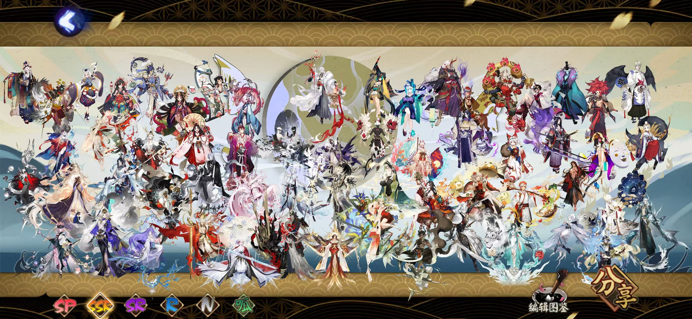
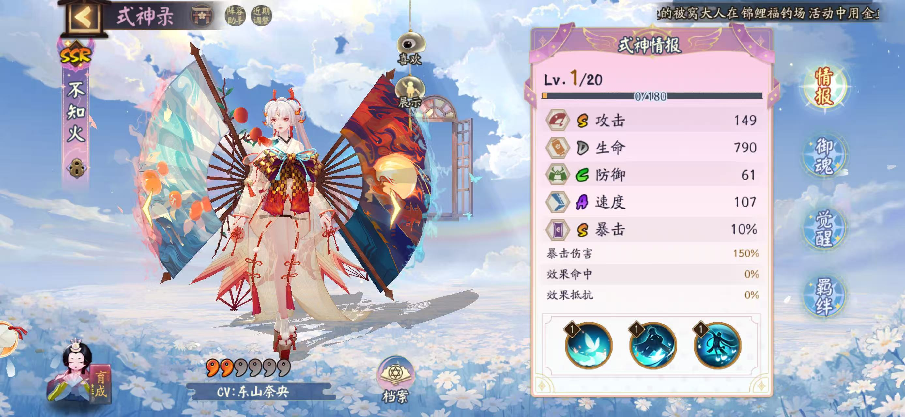
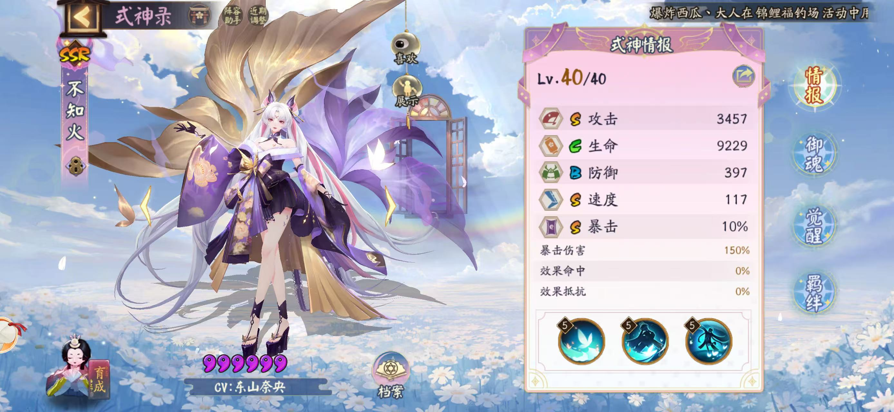

陰陽師（Onmyoji）
和風ファンタジー世界
平安時代の日本を舞台に、人間と妖怪が共存する幻想的な世界です。
陰陽師たちは式神を使い、異形の存在と戦いながら平和を守っています。
式神収集システム
様々な式神を収集し、育成・編成して戦います。
- 式神の収集
- レベルアップ育成 スキル強化




陰陽師（Onmyoji）
平安時代の日本を舞台に、人間と妖怪が共存する幻想的な世界です。
陰陽師たちは式神を使い、異形の存在と戦いながら平和を守っています。
様々な式神を収集し、育成・編成して戦います。


